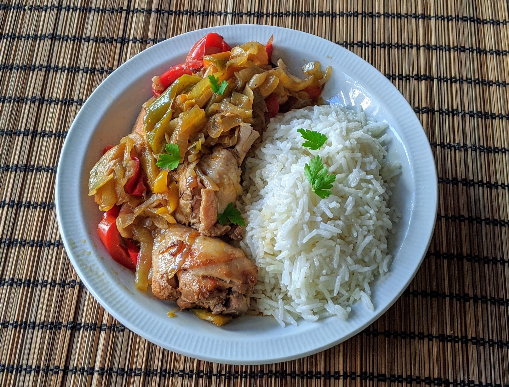

Poulet poivrons-paprika

Pour 4 personnes :
- Quatre filets de poulet, ou un poulet coupé en morceaux
- Deux oignons
- Deux poivrons jaunes
- Deux poivrons oranges
- Deux poivrons rouges
- Deux gousses d'ail
- Un demi-bouquet de persil
- Un litre de bouillon de volaille
- Une bonne cuillère à soupe de paprika doux
- Une bonne cuillère à soupe de paprika fort
- Une cuillère à café de paprika moyen
- Sel, poivre, huile d'olive
- Faire chauffer pas mal d'huile d'holive au fond d'une cocotte allant au four, y faire dorer le poulet.
- Pendant ce temps, éplucher et couper les oignons en bouts pas trop fins.
- Quand le poulet est bien doré, le retirer de la cocotte. Faire cuire les oignons dans l'huile et le jus de poulet, et les faire dorer avec le paprika. Pendant ce temps, laver et couper les poivrons en lamelles, et faire préchauffer le four à 180°C.
- Remettre le poulet dans la cocotte, avec le bouillon, les poivrons et un peu de poivre. Enfourner pour une heure et demie à couvert.
- Éplucher et couper l'ail en petits bouts, laver et ciseler le persil. Les ajouter dans la cocotte 10 minutes avant la fin de la cuisson.
- Servir chaud, par exemple avec du riz.
Remarque : bien entendu, si on a pas trois sortes de paprika chez soi, on peut s'arranger en augmentant les quantités de paprika doux et en mettant un peu de piment en poudre à la place du paprika fort.
Retour à la liste des recettes